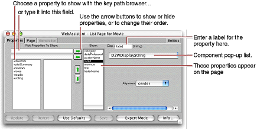

| PATH |

The Properties display of the WebAssistant enables you to specify which properties of an entity appear in a page (or component) and the order in which these properties appear. Most of the user-interface elements for accomplishing these things are in the left half of the display as shown in the following example:
The entity's properties (attributes and relationships) in the Show column are displayed in the page. To the left of the arrows is a key browser that shows relationships (which appear with a "+") and hidden attributes. You can click on a relationship to show its attributes and relationships in the next column of the key browser.
The WebAssistant displays the keys that can be found in the entity's source code. If you want to show a key or key path that doesn't appear, you can type in the text field.
For each property, you can
By default, the WebAssistant shows only class properties. If you want to show a custom method or a keypath, click the Add button. A dialog box is displayed in which you can enter your custom key or key path (for example, "studio.budget").
You can also change the title for a property by editing the string in the Display (Disp.) field. This change only affects the way the property is labeled in the page, and has no effect on the actual property name.
© 2001 Apple Computer, Inc.